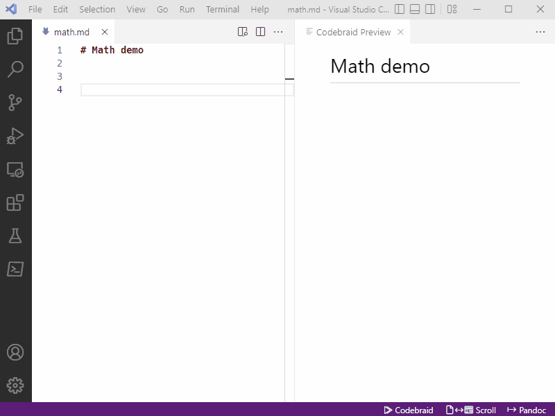

Math
The preview includes math support with KaTeX, which is a
JavaScript library for rendering LaTeX math in the browser. Inline math uses
single $ delimiters while block math uses double $$ delimiters.
For best previewing results, you may want to type the starting and ending delimiters first, and then enter the math between them. That way, you will get a live preview of the math as it is assembled.
